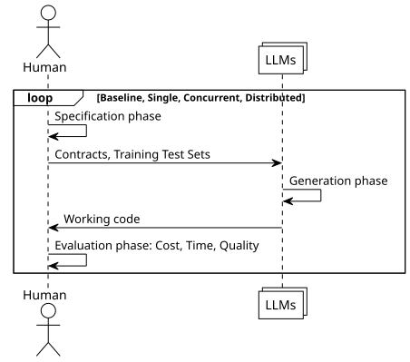
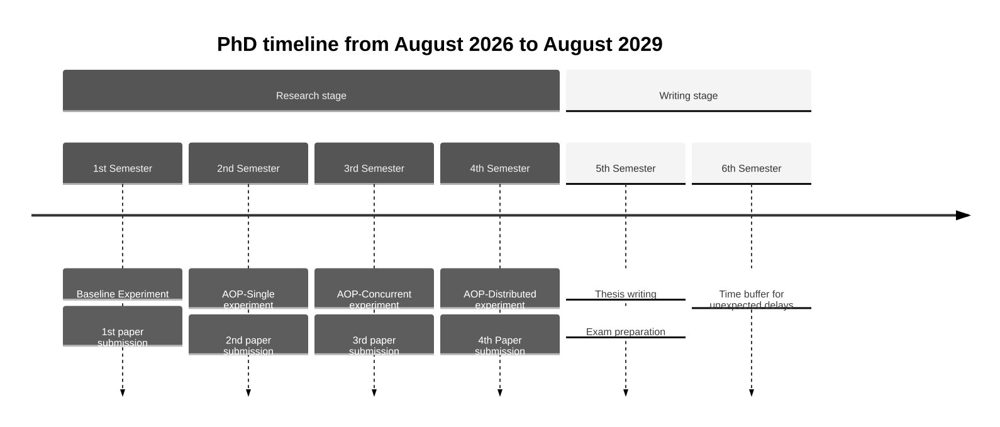

Contracted Intelligence
All of this AI speed is the opposite of what is needed,
Bring me 10x quality or get the f… out.
— zate75
1. Target: To get LLMs to produce reliable software.
- To apply Eiffel's Design by Contract as an interface for LLMs so that they generate trustworthy code.
- To compare LLMs-guided-by-contracts vs LLMs-guided-by-tests to discover which approach produces more reliable software.
- To measure time, money and defects of both approaches
- To program a valuable software product (application or library) to demonstrate he usefulness of the approach.
LLMs are capable of producing a lot of code, but those programs are not reliable.
As summarized by this headline:
Amazon called an emergency meeting after outages caused by AI-assisted code changes. The fix: put senior engineers back in the loop – This week in AI News
For the past 50 years we have known that formal methods enable reliable software development, but they remain unpopular in industry due to project execution methods, certification concerns, and the high cost associated with formal methods [2].
The high cost of applying formal methods has made them obvious candidates to try to automate with Generative AI. As shown by the work of [1] and [3] However to the best of our knowledge there has not been work on using Design By Contract and LLMs.
And there are two industry implementations of Design by Contract Eiffel's and ADA with SPARK. Of those two implementations we decided to use Eiffel because of its Simplified Concurrent Object Oriented Programming (SCOOP). Since SCOOP will help with the concurrency and distributed experiments.
So, given that LLMs make developing code cheaper and Formal Methods make developing software higher quality.
On this project we will try to use formal methods, in its Design by Contract incarnation, to guide LLMs creating software. To get: "10x quality software, not just 10x lines of code"
2. Methodology
During the project we will have two groups: Generate by Unit Tests (GenByTests) and Generate by Contracts (GenByContracts) To compare code generated by LLMs with the current state of the practice (following unit tests) vs our proposal (generated by contracts).
2.1. Experiment protocol
Each experiment runs the following procedure:
Specification phase (human-authored):
- GenByContracts
- A human writes a complete DbC specification for the target library: preconditions, post-conditions, class invariants, and frame rules. No implementation is written.
- GenByTests
- A human writes a test suite for the same target library, split into a training set (given to the LLM) and a verification set (held out for evaluation). No implementation is written.
Generation phase (LLM-authored)
- GenByContracts
- An LLM receives the DbC specification and generates a complete Eiffel implementation.
- GenByTests
- An LLM receives the training-set tests and generates a complete Eiffel implementation.
Evaluation phase
Both implementations are evaluated on the same axes:
- Cost
- API expense to produce a compiling, contract-passing (GenByContracts) or training-set-passing (GenByTests) implementation.
- Time
- Time required to produce a compiling implementation on each group.
- Quality
- performance on the held-out verification set, which neither group has seen during generation.
This design ensures the verification set is an unbiased judge: it tests behavioral correctness that was never explicitly provided to either LLM.
2.2. Experiment Iterations
For our experiments we will develop an implementation of Weiher's [6] Architecture Oriented Programming (AOP) library in Eiffel.
In 4 iterations each iteration with a bigger level of complexity.
The four experiments are:
- Baseline
- Implement (with GenByContracts and GenByTests) known data-structures with known contracts. Like stack, queue or hash-map.
- AOP - Single
- In a single threaded environment, implement Weiher's six patterns
- AOP - Concurrent
- Implement the same patterns now in a multi-threaded processor. For this we will take advantage of Eiffel SCOOP (Simplified Concurrent Object Oriented Programming) [4]
- AOP - Distributed
- Implement the same patterns now in a distributed system. For this we will build on the thesis [5]

Figure 1: Experiment protocol, for 4 experiments
2.3. What is AOP? and Why will it be our library example case?
AOP has a simple but powerful idea:
What would happen if we took the architecture of large software systems, (like HTTP and the web) and shrunk it to the level of a single program?
With this principle Weiher developed the Objective-Smalltalk programming language, but it remains the only implementation and AOP is only documented on his corpus of work. Not specified in an executable format.
The six AOP patterns that Weiher documents are:
| Architectural Inspiration | AOP Pattern |
|---|---|
| Internet URIs | Polymorphic Identifiers [8] |
| Internet Protocols | Schemes [8] |
| Spreadsheet cell references | References [8] |
| Unix pipes and filters | Polymorphic Write Streams [9] |
| REST / stackable file-systems | Storage Combinators [10] |
| Constraint programming | Constraints as Polymorphic Connectors [7] |
We selected this application because:
- It is complex enough, it is not a trivial case.
- It is documented in the academic literature, but there is only one implementation so we can assume LLMs haven't been trained on how to develop it.
- It is an ideal candidate to be specified with Design by Contract by virtue of being inspired by HTTP Protocol that was inspired by DbC.
- The resulting library would be valuable on its own.
3. Budget
| Item | Description | Count | Unit Cost | Subtotal |
|---|---|---|---|---|
| PhD stipend | Researcher salary | 36 months | mxn $ 21,397.32 | mxn $ 770,303.52 |
| LLM API access | 4 experiments × Groups GenByContracts + GenByTests | 9 months | USD $ 200 / month | mxn $ 64,297.08 |
| Eiffel Studio | Academic license | 0 | mxn $ 0 | |
| Conference travel | 4 presentations (ICSE / FM / VerifyAI) | 4 conferences | EUR $690 + USD $1884 | mxn $ 191,462.18 |
| Article Processing Fees | Will publish in Diamond Open Access journals (https://programming-journal.org , https://www.jot.fm) | 4 | mxn $ 0 | |
| Computing infrastructure | CIMAT provision | mxn $ 0 | ||
| TOTAL | mxn $1,026,052.56 |
4. Status
I have been working on an Eiffel AOP implementation since May 2025. During that time I became convinced that AOP is good paradigm to copy in other patterns. But that I would need to speed up my productivity if I ever wanted to finish it. That is why now I will focus on getting Generative AI to produce a correct implementation of AOP guided by contracts. So I have already the human generated contracts that will become the basis for the second experiment AOP - Single.
5. Participants
- PhD Candidate
- Alejandro García F., Msc. in Software Engineering from CIMAT Zacatecas Software engineer with over 30 years of experience. And the originator of the Contracted Intelligence approach, has prior published work on Software Engineering, and brings experience in formal methods, literate programming, and technical writing to the project.
- Research Supervisor
- Dr. Carlos Lara-Alvarez, Director of CIMAT Zacatecas, holds SNI Level I and has 537 academic citations with industry collaborations at Intel and commercial software firms on safety-critical systems.
His expertise in probabilistic models, software testing, and human-machine systems directly covers the experimental design and evaluation methodology of this project.
6. Results and Impact
The project will produce empirical evidence comparing contract-guided vs test-guided LLM code generation, including:
- A validated methodology for using DbC to guide LLMs in generating reliable software
- Quantitative measurements (cost, time, defect rates) comparing both approaches across four complexity levels
- A complete, working implementation of Weiher's AOP library in Eiffel (valuable independently)
- Four peer-reviewed publications documenting findings at each experiment iteration
Delivering these results will enable software engineering teams to adopt contract-guided AI coding practices with evidence-based confidence, and provide AI tool developers with design principles for integrating formal specifications into code generation workflows.
7. Timeline

Figure 2: The project will last for 36 months
8. What I am looking for
To be accepted in the DOCTORADO EN CIENCIAS FÍSICO MATEMÁTICAS CON ORIENTACIÓN EN PROCESAMIENTO DIGITAL DE SEÑALES INTELIGENCIA ARTIFICIAL
Alejandro García F. agarciafdz@gmail.com